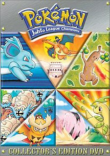

Season 1 - Pokémon: Indigo League
Pokémon: Indigo League (originally aired simply as Pokémon) is the first season of the Pokémon animated television series and the first season of Pokémon: The Original Series, known in Japan as Pocket Monsters: Sekiei League (ポケットモンスター：セキエイリーグ, Poketto Monsutā: Sekiei Rīgu). It originally aired in Japan on TV Tokyo from April 1, 1997, to January 21, 1999. It later aired in the United States in first-run syndication from September 8 to November 20, 1998, and on Kids' WB/The WB from February 13 to November 27, 1999, concluding with the airing of the previously unreleased episode 18 on June 24, 2000. The first season premiered in South Korea on Seoul Broadcasting System from July 14, 1999, to June 14, 2000. It premiered in India on Cartoon Network on May 12, 2003. This season, the narrator of the Pokémon anime (voiced in Japanese by Unshō Ishizuka, and in English by Rodger Parsons) will follow the beginning adventures of Ash Ketchum (voiced in Japanese by Rika Matsumoto, and in English by Veronica Taylor), a 10-year-old aspiring Pokémon trainer from Pallet Town who is given a Pikachu (voiced by Ikue Ōtani) by Pokémon researcher Professor Oak to begin his Pokémon journey. Ash is driven by his desire to win the Indigo Plateau's Pokémon League, a challenging tournament for outstanding Pokémon trainers who compete against each other in Pokémon battles. To qualify for the tournament, Ash must collect the required number of gym badges, which are tokens earned after defeating each of the Kanto region's elite Pokémon gym leaders. Early in the season, Ash befriends the water-type Pokémon trainer Misty, who befriends Ash in hopes of him replacing her destroyed bicycle, and Brock, a Pokémon breeder who is the leader of the Pewter City gym. The episodes were directed by Masamitsu Hidaka and produced by Oriental Light and Magic and TV Tokyo.
Season 2 - Pokémon: Adventures in the Orange Islands
Pokémon: Adventures in the Orange Islands (originally aired simply as Pokémon) is the second season of Pokémon, and the second season of Pokémon: The Original Series, known in Japan as Pocket Monsters: Orange Islands (ポケットモンスター：オレンジ諸島編, Poketto Monsutā: Orenji Shotō Hen). It originally aired in Japan from January 28 to October 7, 1999, on TV Tokyo, in South Korea from June 15 to October 9, 2000 on Seoul Broadcasting System, and in the United States from December 4, 1999, to October 14, 2000, on The WB/Kids’ WB!. The show made its Indian debut on Cartoon Network from September 14, 2003, and ended its run in mid-2004. This season, the narrator of the Pokémon anime (voiced in English by Rodger Parsons and in Japanese by Unshō Ishizuka will follow the adventures of the ten-year-old Pokémon trainer Ash Ketchum (voiced in English by Veronica Taylor and in Japanese by Rika Matsumoto) and his electric mouse partner Pikachu (voiced by Ikue Ōtani) as they collect Gym Badges in the Orange Archipelago, also known as the Orange Islands, so they can compete in the Orange League competition. The episodes were directed by Masamitsu Hidaka and produced by the animation studio Oriental Light and Magic.
Season 3 - Pokémon: The Johto Journeys
Pokémon: The Johto Journeys is the third season of Pokémon, and the third season of Pokémon: The Original Series, known in Japan as Pocket Monsters: Gold and Silver (ポケットモンスター 金銀編, Poketto Monsutā: Kin Gin Hen). It originally aired in Japan from October 14, 1999, to July 27, 2000, on TV Tokyo and in the United States from October 14, 2000, to August 11, 2001, on The WB (Kids' WB). This season, the narrator of the Pokémon anime will follow the continue adventures of the ten-year-old Pokémon trainer Ash Ketchum and his electric mouse partner Pikachu as they collect Gym Badges in the fictional Johto region so they can compete in the Johto League competition. The episodes were directed by Masamitsu Hidaka and produced by the animation studio OLM. In 2000, during the show's run in the United States, it was ranked as the number 1 program among boys 2–11 years old.
Season 4 - Pokémon: Johto League Champions
Pokémon: Johto League Champions is the fourth season of Pokémon and the fourth season of Pokémon: The Original Series, known in Japan as Pocket Monsters: Gold and Silver (ポケットモンスター金銀編, Poketto Monsutā Kin Gin Hen). It originally aired in Japan from August 3, 2000, to August 2, 2001, on TV Tokyo, and in the United States from August 18, 2001, to September 7, 2002, on The WB (Kids' WB). It aired in India from December 25, 2004 to mid 2005 on Cartoon Network. The season follows the adventures of the ten-year-old Pokémon trainer Ash Ketchum and his electric mouse partner Pikachu as they collect Gym Badges in the fictional Johto region so they can compete in the Johto League competition. The episodes were directed by Masamitsu Hidaka and produced by the animation studio OLM.
Season 5 - Pokémon: Master Quest
Pokémon: Master Quest is the fifth season of Pokémon and the fifth and final season of Pokémon: The Original Series, known in Japan as Pocket Monsters: Gold and Silver (ポケットモンスター金銀編, Poketto Monsutā Kin Gin Hen). It originally aired in Japan from August 9, 2001, to November 14, 2002, on TV Tokyo, and in the United States from September 14, 2002, to October 25, 2003, on Kids' WB. It aired in India from May 18, 2005 on Cartoon Network. It was the first season of Pokémon to be digitally animated as opposed to cel animation, starting with the episode "Here's Lookin' at You, Elekid". The season follows the adventures of the ten-year-old Pokémon trainer Ash Ketchum and his electric mouse partner Pikachu as they collect Gym Badges in the fictional Johto region so they can compete in the Johto League competition. The episodes were directed by Masamitsu Hidaka and produced by the animation studio OLM.
Season 6 - Pokémon: Advanced
Pokémon: Advanced is the sixth season of Pokémon and the first season of Pokémon the Series: Ruby and Sapphire, known in Japan as Pocket Monsters: Advanced Generation (ポケットモンスター アドバンスジェネレーション, Poketto Monsutā Adobansu Jenerēshon). It originally aired in Japan from November 21, 2002, to August 28, 2003, on TV Tokyo, and in the United States from November 1, 2003, to September 4, 2004, on Kids' WB/The WB. It aired in India from May 9, 2006 on Cartoon Network. Set in the fictional Hoenn region, the season follows the adventures of the ten-year-old Pokémon trainer Ash Ketchum, and his electric mouse partner Pikachu as they collect Gym Badges so they can compete in the Hoenn League competition. Along the way, they are joined by Brock, the leader of the Pewter City Gym, and the Pokémon coordinator May and her brother, Max, as May competes in Pokémon Contests with the aim of earning Ribbons so she can enter the Hoenn Grand Festival. The episodes were directed by Masamitsu Hidaka and produced by the animation studio OLM.
Season 7 - Pokémon: Advanced Challenge
Pokémon: Advanced Challenge is the seventh season of Pokémon and the second season of Pokémon the Series: Ruby and Sapphire, known in Japan as Pocket Monsters: Advanced Generation (ポケットモンスター アドバンスジェネレーション, Poketto Monsutā Adobansu Jenerēshon). It originally aired in Japan from September 4, 2003, to September 2, 2004, on TV Tokyo, and in the United States from September 11, 2004, to September 10, 2005, on Kids' WB. Set in the fictional Hoenn region, the season follows the adventures of the ten-year-old Pokémon trainer Ash Ketchum, and his electric mouse partner Pikachu as they collect Gym Badges so they can compete in the Hoenn League competition. Along the way, they are joined by Brock, the leader of the Pewter City Gym, and the Pokémon coordinator May and her brother, Max, as May competes in Pokémon Contests with the aim of earning Ribbons so she can enter the Hoenn Grand Festival. The episodes were directed by Masamitsu Hidaka and produced by the animation studio OLM.
Season 8 - Pokémon: Advanced Battle
Pokémon: Advanced Battle is the eighth season of Pokémon and the third season of Pokémon the Series: Ruby and Sapphire, known in Japan as Pocket Monsters: Advanced Generation (ポケットモンスター アドバンスジェネレーション, Poketto Monsutā Adobansu Jenerēshon). It originally aired in Japan from September 9, 2004, to September 29, 2005, on TV Tokyo, and in the United States from September 17, 2005, to July 8, 2006, on The WB network as part of the Kids' WB! programming block, and follows the adventures of the ten-year-old Pokémon trainer Ash Ketchum, and his electric mouse partner Pikachu as he continues traveling through Hoenn and Kanto with Brock, May, and Max. In Japan, the episodes comprising this season aired as part of the Advanced Generation series under two subtitles. The first thirty-eight episodes were aired in Japan as the second half of Pocket Monsters: Advanced Generation (ポケットモンスター アドバンスジェネレーション, Poketto Monsutā Adobansu Jenerēshon), having their initial run in Japan from September 9, 2004 until June 16, 2005. The next fifteen episodes were broadcast in Japan under the subtitle Pocket Monsters: Advanced Generation: Battle Frontier Seven (ポケットモンスター アドバンスジェネレーション戦いのフロンチア七, Poketto Monsutā Adobansu Jenerēshon Tatakai no Furontia Nana), first airing in Japan on June 23 through September 29, 2005. In these episodes, Ash collect Gym Badges in the Hoenn region so they can compete in the Hoenn League competition. Along the way, they are joined by Brock, the leader of the Pewter City Gym, and the Pokémon coordinator May and her brother, Max, as May competes in Pokémon Contests with the aim of earning Ribbons so she can enter the Hoenn Grand Festival. Afterwards, Ash returns to the Kanto region to compete in the Battle Frontier by earning Frontier Symbols from Frontier Brains, while May continues competing to earn Contest Ribbons so she can enter the Kanto Grand Festival. The episodes were directed by Masamitsu Hidaka and produced by the animation studio OLM.
Season 9 - Pokémon: Battle Frontier
Pokémon: Battle Frontier is the ninth season of Pokémon and the fourth and final season of Pokémon the Series: Ruby and Sapphire, known in Japan as Pocket Monsters: Advanced Generation (ポケットモンスター アドバンスジェネレーション, Poketto Monsutā Adobansu Jenerēshon). It originally aired in Japan from October 6, 2005, to September 14, 2006, on TV Tokyo, and in the United States from September 9, 2006, to March 3, 2007, on Cartoon Network. Set in the fictional Kanto region, the season follows the adventures of the ten-year-old Pokémon trainer Ash Ketchum and his electric mouse partner Pikachu as they collect Frontier Symbols from Frontier Brains in the Battle Frontier. Along the way, they are joined by Brock, the leader of the Pewter City Gym, as well as the Pokémon coordinator May and her brother Max, as May collects Ribbons from Pokémon Contests so she can compete in the Kanto Grand Festival. The episodes were directed by Masamitsu Hidaka and Norihiko Sudo, and were produced by the animation studio OLM. This is the first season of Pokémon to be localized into English by Pokémon USA after 4Kids Entertainment's contract was not renewed. It was also the first season to premiere on Cartoon Network since 2002; it began airing on September 9, 2006, and ended on March 3, 2007.
Season 10 - Pokémon the Series: Diamond and Pearl
Pokémon: Advanced Battle is the eighth season of Pokémon and the third season of Pokémon the Series: Ruby and Sapphire, known in Japan as Pocket Monsters: Advanced Generation (ポケットモンスター アドバンスジェネレーション, Poketto Monsutā Adobansu Jenerēshon). It originally aired in Japan from September 9, 2004, to September 29, 2005, on TV Tokyo, and in the United States from September 17, 2005, to July 8, 2006, on The WB network as part of the Kids' WB! programming block, and follows the adventures of the ten-year-old Pokémon trainer Ash Ketchum, and his electric mouse partner Pikachu as he continues traveling through Hoenn and Kanto with Brock, May, and Max. In Japan, the episodes comprising this season aired as part of the Advanced Generation series under two subtitles. The first thirty-eight episodes were aired in Japan as the second half of Pocket Monsters: Advanced Generation (ポケットモンスター アドバンスジェネレーション, Poketto Monsutā Adobansu Jenerēshon), having their initial run in Japan from September 9, 2004 until June 16, 2005. The next fifteen episodes were broadcast in Japan under the subtitle Pocket Monsters: Advanced Generation: Battle Frontier Seven (ポケットモンスター アドバンスジェネレーション戦いのフロンチア七, Poketto Monsutā Adobansu Jenerēshon Tatakai no Furontia Nana), first airing in Japan on June 23 through September 29, 2005. In these episodes, Ash collect Gym Badges in the Hoenn region so they can compete in the Hoenn League competition. Along the way, they are joined by Brock, the leader of the Pewter City Gym, and the Pokémon coordinator May and her brother, Max, as May competes in Pokémon Contests with the aim of earning Ribbons so she can enter the Hoenn Grand Festival. Afterwards, Ash returns to the Kanto region to compete in the Battle Frontier by earning Frontier Symbols from Frontier Brains, while May continues competing to earn Contest Ribbons so she can enter the Kanto Grand Festival. The episodes were directed by Masamitsu Hidaka and produced by the animation studio OLM.
Season 11 - Pokémon: Diamond and Pearl: Battle Dimension
Pokémon: Diamond and Pearl: Battle Dimension (advertised as Pokémon: DP Battle Dimension) is the eleventh season of the Pokémon animated series and the second season of Pokémon the Series: Diamond and Pearl, known in Japan as Pocket Monsters Diamond and Pearl (ポケットモンスター ダイヤモンド パール, Poketto Monsutā Daiyamondo and Pāru). It originally aired in Japan from November 8, 2007, to December 4, 2008, on TV Tokyo, and in the United States from April 12, 2008, to May 2, 2009, on Cartoon Network, covering the continuing adventures of series protagonist Ash Ketchum as he continues to travel Sinnoh with Dawn, Pikachu, and Brock. The Japanese opening songs are "Together" for 26 episodes, and "Together 2008" for 17 episodes by Fumie Akiyoshi, and "High Touch!" (ハイタッチ!, Hai Tatchi!) by Rika Matsumoto and Megumi Toyoguchi for 9 episodes.[1] The ending songs are "By Your Side 〜Hikari's Theme〜 (Winter. Version)" (君のそばで 〜ヒカリのテーマ〜 Winter. Version, Kimi no Soba de 〜Hikari no Tēma〜 Winter. Version) by Grin for 9 episodes, "Message of the Wind" (風のメッセージ, Kaze no Messēji) for 23 episodes, and "Message of the Wind (POKAPOKA-VERSION.)" (風にメッセージ POKAPOKA-VERSION., Kaze no Messēji POKAPOKA-VERSION.) for 11 episodes by Mai Mizuhashi, "Surely Tomorrow" (あしたはきっと, Ashita wa Kitto) by Kanako Yoshii for 9 episodes, and the English opening song is "We Will Be Heroes" by Kirsten Price. Its instrumental version served as the end credit song. Beginning with this season all the way up to the twenty second DuArt Media Services would serve as TPCi's producing partner for the English dub taking over from TAJ Productions.
Season 12 - Pokémon: Diamond and Pearl: Galactic Battles
Pokémon: Diamond and Pearl: Galactic Battles (advertised as Pokémon: DP Galactic Battles) is the twelfth season of the Pokémon animated series and the third season of Pokémon the Series: Diamond and Pearl, known in Japan as Pocket Monsters Diamond and Pearl (ポケットモンスター ダイヤモンド パール, Poketto Monsutā Daiyamondo and Pāru). It originally aired in Japan from December 4, 2008, to December 24, 2009, on TV Tokyo, and in the United States from May 9, 2009, to May 15, 2010, on Cartoon Network, covering the continuing adventures of series protagonist Ash Ketchum as he continues to travel Sinnoh with Dawn, Pikachu, and Brock.
Season 13 - Pokémon: Diamond and Pearl: Sinnoh League Victors
Pokémon: Diamond and Pearl: Sinnoh League Victors (advertised as Pokémon: DP Sinnoh League Victors), is the thirteenth season of the Pokémon animated series and the fourth and final season of Pokémon the Series: Diamond and Pearl, known in Japan as Pocket Monsters Diamond and Pearl (ポケットモンスター ダイヤモンド パール, Poketto Monsutā Daiyamondo and Pāru). It originally aired in Japan from January 7, 2010, to February 3, 2011, on TV Tokyo and in the United States from June 5, 2010, to February 5, 2011, on Cartoon Network, concluding the final adventures of series protagonist Ash Ketchum as he continues to travel with Dawn, Pikachu and Brock in the Sinnoh region.
Season 14 - Pokémon the Series: Black and White
Pokémon: Black and White is the fourteenth season of the Pokémon anime series and the first and titular season of Pokémon the Series: Black and White, known in Japan as Pocket Monsters: Best Wishes! (ポケットモンスター ベストウイッシュ, Poketto Monsutā Besuto Uisshu!). It in itself is a reboot of Ash’s journey as he travels to the new region of Unova. It originally aired in Japan from September 23, 2010, to September 15, 2011, on TV Tokyo channel 7, and in the United States from February 12, 2011, to January 7, 2012, on Cartoon Network. Brock and Dawn have left the series, and Ash is joined by a new female trainer named Iris and a new male trainer named Cilan. The evil syndicate Team Rocket has a part to play in this season, and Jessie, James, and Meowth have been promoted.
Season 15 - Pokémon: Black and White: Rival Destinies
Pokémon: Black and White: Rival Destinies (advertised as Pokémon: BW: Rival Destinies), known in Japan as Pocket Monsters: Best Wishes! (ポケットモンスター ベストウイッシュ, Poketto Monsutā Besuto Uisshu) and Pocket Monsters: Best Wishes! 2 (ポケットモンスター ベストウイッシュ2, Poketto Monsutā Besuto Uisshu Tsu), is the fifteenth season of the Pokémon anime series and the second season of Pokémon the Series: Black and White, known in Japan as Pocket Monsters: Best Wishes! (ポケットモンスター ベストウイッシュ, Poketto Monsutā Besuto Uisshu). It originally aired in Japan from September 22, 2011 to October 4, 2012, on TV Tokyo, and in the United States from February 18, 2012, to January 26, 2013, on Cartoon Network, covering the continuing adventures of series protagonist Ash Ketchum and his Pikachu as they continue traveling through Unova with Cilan and Iris. The Japanese opening songs are "Best Wishes!" (ベストウイッシュ!, Besuto Uisshu!) and "Be an Arrow!" (やじるしになって, Yajirushi ni Natte) by Rika Matsumoto. The ending songs are "Can You Name All the Pokemon? BW" (ポケモン言えるかな? BW, Pokémon Ierukana? BW) by Takeshi Tsuruno, "Seven-colored Arch" (七色アーチ, Nanairo Āchi) by the BW Choral Gang (Aki Okui, Toshiko Ezaki, and Fumie Akiyoshi), "Look Look☆Here" (みてみて☆こっちっち, Mite Mite☆Kotchitchi) by Momoiro Clover Z, "Team Rocket Forever" (ロケット団よ永遠に, Roketto-dan yo Eien ni) by the Team Rocket Gang, and the English opening song is "Rival Destinies" by Alex Nackman and Kathryn Raio. Its instrumental version serves as the ending theme.
Season 16 - Pokémon: Black and White: Adventures in Unova and Beyond
Pokémon: Black and White: Adventures in Unova and Beyond (advertised as Pokémon: BW: Adventures in Unova and Beyond), known in Japan as Pocket Monsters: Best Wishes! Season 2: Decolora Adventure (ポケットモンスター ベストウイッシュ シーズン2 デコロラアドベンチャー, Poketto Monsutā Besuto Uisshu Shīzun Tsū Dekorora Adobenchā), is the second of two parts of the sixteenth season of the Pokémon animated series — the third and final season of Pokémon the Series: Black & White, known in Japan as Pocket Monsters: Best Wishes! (ポケットモンスター ベストウイッシュ, Poketto Monsutā Besuto Uisshu, literally "Pocket Monsters: Best Wishes!"). It originally aired in Japan from April 25, 2013 to March 27, 2014, on TV Tokyo, and in the United States from July 27, 2013 to December 7, 2013, on Cartoon Network, and features protagonist Ash Ketchum and his friends Cilan and Iris as they traverse the Decolore Islands (デコロラ諸島, Dekorora Shotō). Ash makes his way back to Kanto with Iris joining so she can become a better Dragon Master and Cilan planning on improving his Connoisseur skills with Kanto-region Pokémon. The Japanese opening song is "Summerly Slope" (夏めく 坂道, Natsumeku Sakamichi) by Daisuke. The ending songs are "Let's Join Hands" (手をつなごぅ, "Te o Tsunagō") by Shiritsu Ebisu Chugaku (チュ学私立恵比寿), "X Strait, Y Scenery" (X海峡Y景色, Ekkusu Kaikyō Wai Keshiki, "X-Kaikyō, Y-Keshiki") performed by Jewel (J☆Dee'Z) during the second Black and White anime special episode, and the English opening song is "It's Always You and Me" by Neal Coomer and Kathryn Raio. Its instrumental version serves as the ending theme.
Season 17 - Pokémon the Series: XY
Pokémon The Series: XY is the seventeenth season of the Pokemon animated series and the first and titular season of Pokémon The Series: XY, known in Japan as Pocket Monsters: XY (ポケットモンスター エックス・ワイ, Poketto Monsutā Ekkusu Wai). It is the first dubbed season to use the "Pokémon The Series" branding. The season follows the continuing adventures of Ash Ketchum and Pikachu as they explore the Kalos region. Traveling in the Kalos region with their new friends - Clemont and his little sister Bonnie, along with Ash's childhood friend Serena - the party discover new Pokémon and the mysterious Mega Evolutions. The season originally aired in Japan from October 17, 2013, to October 30, 2014, on TV Tokyo,[1] and in the United States from January 18, 2014, to December 20, 2014, on Cartoon Network after a preview of the first two episodes on October 19, 2013.[2] In India, Pokémon XY is first aired on Hungama TV on May 9, 2015 in Hindi dub. But, some episodes are not aired on Hungama TV. Later, remaining episodes are dub in Hindi and this season is reaired on Marvel HQ (Now, known as Super Hungama) on March 20, 2021. The Japanese opening songs are "V (Volt)" (V (ボルト), Boruto) by Yūsuke Kamiji, and an alternate version by Rika Matsumoto and Jewel (J☆Dee'Z) for 28 episodes, and "Mega (Volt)" (メガV (メガボルト), Megaboruto) performed by Yūsuke Kamiji for 21 episodes. The ending songs are "X Strait, Y Scenery" (X海峡Y景色, Ekkusu Kaikyō Wai Keshiki, "X-Kaikyō, Y-Keshiki") performed by Jewel (J☆Dee'Z) for 28 episodes, "Peace Smile!" (ピースマイル!, Pīsumairu!) performed by Jewel (J☆Dee'Z) with Ikue Ōtani for 18 episodes, "DreamDream" (ドリドリ DoriDori) performed by Shoko Nakagawa for 3 episodes, and the English opening song is "Pokémon Theme (Version XY)", performed by Ben Dixon and The Sad Truth. Its instrumental version serves as the ending theme.
Season 18 - Pokémon the Series: XY Kalos Quest
Pokémon the Series: XY Kalos Quest is the eighteenth season of the Pokémon anime series, and the second season of Pokémon the Series: XY, known in Japan as Pocket Monsters: XY (ポケットモンスター エックスワイ, Poketto Monsutā Ekkusu Wai). It originally aired in Japan from November 6, 2014, to October 22, 2015, on TV Tokyo, and in the United States from February 7 to December 19, 2015, on Cartoon Network. Set in the Kalos region, the season follows the adventures of the Pokémon trainer Ash Ketchum, Serena, Clemont and his sister Bonnie as Ash and his Pikachu collect Gym Badges to compete in the Kalos League and as Pokémon Performer Serena wins Princess Keys from Pokémon Showcases so she can enter the Pokémon Showcase Master Class. The episodes were directed by Tetsuo Yajima and produced by the animation studio OLM. The Japanese opening songs are "Mega (Volt)" (メガV (メガボルト), Megaboruto) performed by Yusuke Kaiji for 6 episodes, and "Mad-Paced Getter" (ゲッタバンバン, Getta Banban) performed by Tomohisa Sako for 39 episodes. The ending songs are "DreamDream" (ドリドリ, DoriDori) performed by Shoko Nakagawa for 19 episodes, "Roaring All-Stars" (ガオガオ・オールスター, Gaogao Ōrusutā) performed by Little Glee Monster for 26 episodes, and the English opening song is "Be a Hero", performed by Ben Dixon and The Sad Truth,[1] featuring composer Ed Goldfarb.[2] Its instrumental version serves as the ending theme.
Season 19 - Pokémon the Series: XYZ
Pokémon the Series: XYZ (known in Japan as Pocket Monsters: XY and Z (ポケットモンスターエックスワイ アンド ゼット, Poketto Monsutā Ekkusu Wai ando Zetto) is the nineteenth season of the Pokémon anime series, and the third and final season of Pokémon the Series: XY, known in Japan as Pocket Monsters: XY (ポケットモンスター エックス・ワイ, Poketto Monsutā Ekkusu Wai). Ash, Serena, Clemont, and Bonnie continue their adventures in the Kalos region, where they encounter the sinister Team Flare and meet the enigmatic Mega Evolution Trainer, Alain. They delve into the mysteries surrounding the unique transformation of Ash's Greninja and face a prophecy concerning the destruction of Kalos with the involvement of the Legendary Pokémon Zygarde. The season originally aired in Japan from October 29, 2015, to November 10, 2016, on TV Tokyo, and in the United States from February 20, 2016, to January 28, 2017, on Cartoon Network. The Japanese opening song is "XYZ (Let's Go!)" (いくZ, Ikuze) by Rika Matsumoto. The Japanese ending songs are "Puni-chan's Song" (プニちゃんのうた, Puni-chan no Uta) by Mariya Ise, "Team Rocket's Team Song" (ロケット団団歌, Roketto-dan dan Uta) by Megumi Hayashibara, Shin-ichiro Miki, Inuka Inuyama and Yūji Ueda, "DreamDream (Serena Ver.)" (ドリドリ セレナ Ver., DoriDori Serena Ver.) by Mayuki Makiguchi, "Brilliantly (Clemont ver.)" (キラキラ シトロンver., KiraKira Shitoron ver.) by Yuki Kaji, "Pikachu's Song" (ピカチュウのうた, Pikachū no Uta) by Ikue Ōtani, "Meowth's Ballad" (ニャースのバラード, Nyāsu no Barādo) by Inuko Inuyama, and the English opening song is "Stand Tall" by Ben Dixon and The Sad Truth. Its instrumental version serves as the ending theme.
Season 20 - Pokémon the Series: Sun and Moon
Pokémon the Series: Sun and Moon is the twentieth season of the Pokémon animated series and the first and titular season of Pokémon the Series: Sun and Moon, known in Japan as Pocket Monsters: Sun and Moon (ポケットモンスター サン ムーン, Poketto Monsutā: San and Mūn). This season follows the continuing adventures of Ash Ketchum and Pikachu as they travel to the Alola region, go to Pokémon school with classmates (Lillie, Lana, Mallow, Kiawe, Sophocles), participate in the island trials, and learn how to use the power of Z-moves. The season originally aired in Japan from November 17, 2016, to September 21, 2017, on TV Tokyo,[1] and in the United States from May 12, 2017, to December 9, 2017, on Disney XD, making it the first Pokémon series to premiere on that channel. Prior to this, a preview of the first two episodes aired on the network on December 5, 2016. The Japanese opening songs are "Alola!!" (アローラ!!, Arōra!!) by Rika Matsumoto with Ikue Otani for 29 episodes, and "Aim to Be a Pokémon Master (20th Anniversary)" (めざせポケモンマスター (20th Anniversary), Mezase Pokémon Masutā (20th Anniversary)) by Rika Matsumoto for 14 episodes. The ending song is "Pose" (ポーズ, Pōzu) by Taiiku Okazaki, and the English opening song is "Under the Alolan Sun" by Jannel Candrice and The Sad Truth, featuring composer Ed Goldfarb. Its instrumental version serves as the ending theme.
Season 21 - Pokémon the Series: Sun and Moon – Ultra Adventures

Pokémon the Series: Sun and Moon – Ultra Adventures is the twenty-first season of the Pokémon anime series and the second season of Pokémon the Series: Sun and Moon, known in Japan as Pocket Monsters: Sun and Moon (ポケットモンスター サン ムーン, Poketto Monsutā: San and Mūn). This season follows the continuing adventures of Ash and his classmates Lillie, Lana, Mallow, Kiawe, and Sophocles at the Pokémon school in the Alola region and the protagonist's rival Gladion and his antagonist James, Jessie and Meowth. The season originally aired in Japan from October 5, 2017, to October 14, 2018, on TV Tokyo, and in the United States from March 24, 2018, to February 23, 2019, on Disney XD.[1] The series is also available to stream on Netflix.[2] The Japanese opening songs are "Alola!!" (アローラ!!, Arōra!!) by Rika Matsumoto with Ikue Otani, "Future Connection" (未来コネクション, Mirai Konekushon) by ЯeaL and "Your Adventure" (キミの冒険, Kimi no Bōken) by Taiiku Okazaki. The ending songs are "Pose" (ポ-ズ, Pōzu), "Twerp, Twerpette" (ジャリボーイ・ジャリガール, Jari-bōi, Jari-gāru) by Taiiku Okazaki, "Breath" (ブレス, Buresu) by Porno Graffitti,[3] and the English opening song is “Under the Alolan Moon” by composer Ed Goldfarb, featuring Haven Paschall and Ben Dixon. Its instrumental version serves as the ending theme.
Season 22 - Pokémon the Series: Sun and Moon – Ultra Legends
Pokémon the Series: Sun and Moon – Ultra Legends is the twenty-second season of the Pokémon anime series, and the third and final season of Pokémon the Series: Sun and Moon, known in Japan as Pocket Monsters: Sun and Moon (ポケットモンスター サン ムーン, Poketto Monsutā: San and Mūn). It originally aired in Japan from October 21, 2018, to November 3, 2019, on TV Tokyo, this season follows the final adventures of Ash Ketchum and his classmates Lillie, Lana, Mallow, Kiawe, and Sophocles at the Pokémon school in the Alola region, and the season premiered in the United States from March 23, 2019, to March 7, 2020, on Disney XD, as it was the last season to air on television in the country. Starting with season 23 (Journeys), the English dub moved to online streaming releases via Netflix in the United States.[1] The Japanese opening song is "Your Adventure" (キミの冒険, Kimi no Bōken) by Taiiku Okazaki. The ending songs are "Notebook of the Heart" (心のノート, Kokoro no Nōto) by the Hino City Nanaomidori Elementary School Choir, "Type: Wild 2019" (タイプ：ワイルド2019, Taipu: Wairudo 2019) by Shoko Nakagawa,[2] and the English opening song is "The Challenge of Life" performed by Dani Marcus and the Sad Truth, as it was the last English opening song to have the lyric "Pokémon" in the song in the United States. Starting with opening song 23, the lyric "Pokémon" is not heard on Netflix in the United States during (Journeys). Its instrumental version serves as the ending theme.
Season 23 - Pokémon Journeys: The Series
Pokémon Journeys: The Series is the twenty-third season of the Pokémon anime series and the first and titular season of Pokémon Journeys: The Series, known in Japan as Pocket Monsters (ポケットモンスター, Poketto Monsutā). The season premiered from November 17, 2019, to December 4, 2020, on TV Tokyo channel 7, and in the United States, it releases as a streaming television season that premiered from June 12, 2020, to March 5, 2021, on Netflix, making it the first Pokémon series not to air on conventional broadcast television in the United States, unlike previous series. It premiered in Canada on Teletoon on a weekly basis from May 9, 2020, to June 5, 2021.[1] This season follows the adventures of Ash Ketchum and new protagonist Goh (and occasionally Chloe) as they travel across all eight regions of the Pokémon franchise, including the new Galar region from Pokémon Sword and Shield.[2] Supporting characters include Professor Cerise, a Pokémon researcher who oversees Ash and Gou's missions, and his daughter Chloe, Gou's childhood friend.[3] On April 23, 2020, The Pokémon Company International announced that Netflix has secured the U.S. rights to release future seasons, starting with "Pokémon Journeys".[4] Episodes were released in quarterly groups of twelve.[5] On September 13, 2020, it was announced the anime will switch from airing on Sundays to Fridays on October 9, 2020.[6] The show began airing on September 1, 2020 on Pop in the United Kingdom.[7] The show aired on Pop Max on August 30, 2021. The show began premiering in India in Hindi dub on YouTube on a weekly basis on Friday from October 29, 2021.
Season 24 - Pokémon Master Journeys: The Series
Pokémon Master Journeys: The Series is the twenty-fourth season of the Pokémon animated series, and the second season of Pokémon Journeys: The Series, known in Japan as Pocket Monsters (ポケットモンスター, Poketto Monsutā). The season premiered in Japan on December 11, 2020, on TV Tokyo; in Canada, the season premiered on Teletoon in June 2021, Télétoon in July 2021.[1] and in the United States, it was released as a streaming television season with its first 12 episodes on September 10, 2021, on Netflix, with new episodes to be released on January 21, and May 26, 2022 respectively.[2][3][4] This season continues the research fellowship adventures of Ash Ketchum, Goh and Chloe, as they travel across all eight regions, including the new Galar region from Pokémon Sword and Shield and the Galar region's Crown Tundra from Pokémon Sword and Shield: The Crown Tundra, based at Cerise Laboratory in Vermillion City in the Kanto region.